Вітальня · журнал «ДентАрт» 2024 №3
Доктор Гаетано Паолоне: «Мені подобаються прямі реставрації, бо вони менш інвазивні»
DR. GAETANO PAOLONE: I LIKE DIRECT RESTORATIONS BECAUSE THEY ARE LESS INVASIVE
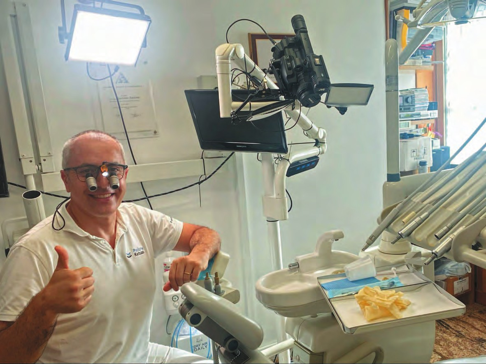
У Вітальні літнього числа журналу «ДентАрт» – доктор Гаетано Паолоне, стоматолог з Риму, відомий колегам і пацієнтам як співвласник клініки Studio Paolone Kaitsas, а студентській та академічній спільноті – як талановитий викладач в одному з провідних університетів Італії – Vita-Salute San Raffaele (Мілан). Цей університет славиться успішною інтеграцією викладання і досліджень. Доктор Паолоне добре відомий і українським стоматологам, читачам «ДентАрту». Нам є про що поговорити і що згадати!
Я дуже люблю свою професію!
– Друже Гаетано, ми знаємо Вас передусім як талановитого стоматолога і викладача в галузі прямої реставрації зубів композитами. На нинішніх мультидисциплінарних зустрічах стоматологів презентації з прямої реставрації просто губляться за великою кількістю презентацій з непрямої реставрації, періодонтології, хірургії ясен та імплантації… Чому Ви як стоматолог обрали своїм професійним полем пряму реставрацію, у чому бачите її переваги?
– Дякую за запитання! Мені дуже подобаються прямі реставрації з кількох причин: перша причина – це те, що вони робляться своїми руками, а ми, стоматологи, звикли до роботи руками. Нині, на жаль, усе більше і більше лікування провадиться за допомогою техніки і комп'ютерів. Проте я впевнений, що в цьому є щось корисне, тому що буде багато спрощень в усіх видах реставрації зубів. Але все ж таки пряма реставрація, яку ми робимо своїми руками, є дуже гарним варіантом, тому що часто пряма реставрація набагато менш інвазивна, ніж непряма, яка робить зуб трохи гіршим через препарування значної кількості зубних тканин.
– Доречно було б згадати і про те, як Ви взагалі обрали своєю професією стоматологію. Які чинники вплинули на Ваш вибір? Інколи мені здається, що Ви були стоматологом від народження…
– Я дуже люблю свою професію! Мені особливо до вподоби минуле моєї професії, її реставраційна частина. Здебільшого мені подобаються прямі реставрації, бо вони менш інвазивні, але за потреби я можу робити і непрямі. Наприклад, я люблю онлей, інлей та вініри для відновлення зубів.
А щодо вибору професії, то мій батько – педіатр, зараз на пенсії. Можна сказати, що я народився в медичному середовищі. Мені більше подобалися практичні дисципліни, а стоматологія поєднує в собі медичні та практичні аспекти. Ти можеш керувати своїм часом. Я думаю, що це хороший варіант і хороший баланс!
– Чим би Ви займалися, якби не стали стоматологом? Чи був у Вас план Б?
– Я завжди запитував себе, чим я можу займатися, окрім стоматології. Відповідей безліч, тому що мені багато чого подобалося... Наприклад, мені подобалися професії піцайоло, фотографа, архітектора, інженера, тобто переважно практичні речі, які потрібно робити своїми руками.
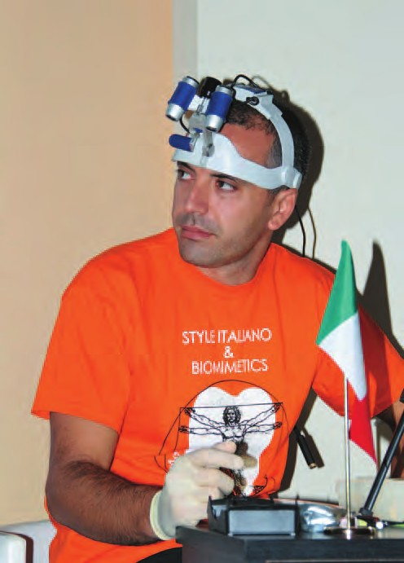
Поєднувати академічне життя з приватною стоматологічною практикою складно, але мені це до душі
– Ви працюєте у приватній клініці, яку в Італії прийнято називати студією, і одночасно викладаєте студентам пряму реставрацію зубів в Університеті Віта-Салюте Сан Рафаелле… Наскільки легко поєднувати приватну й університетську стоматологію?
– Це своєрідний виклик. Щонайменше раз на тиждень я їжджу в Мілан швидкісним потягом і повертаюся того ж дня пізно ввечері. Тому мені доводиться прокидатися дуже рано. Це досить складно, але мені подобається викладати студентам.
Проблема в тому, що іноді ти відчуваєш, що не можеш зробити все якісно. Я намагаюся робити все можливе, незважаючи на те, що поєднувати академічне життя з приватною стоматологічною практикою досить складно. Але мені це до душі, і я буду так працювати, доки сил.
Я викладаю лікарям уже майже 9 років, а в університеті викладаю студентам два з половиною роки. Не знаю, що буде в майбутньому, але зараз мені таке поєднання до вподоби.
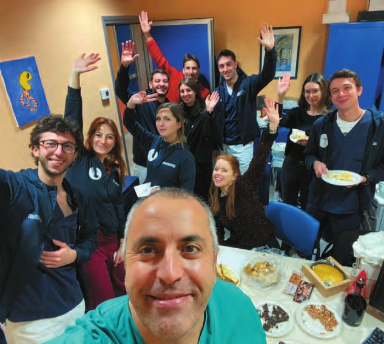
– У літньому номері журналу «ДентАрт» варто згадати про високу навколишню температуру повітря, адже композити виявляють свої прийнятні мануальні властивості в досить вузькому діапазоні від 21 до 24 градусів за Цельсієм… Особливо це важливо для спекотної літньої Італії! Як Ви підтримуєте потрібну температуру повітря у стоматологічному кабінеті?
– Це дуже важливо для композитів. У стоматологічному кабінеті повітря охолоджується за допомогою кондиціонера, але ця проблема з'являється тільки влітку, її не існує в інші пори року. Улітку я намагаюся тримати композит у холодильнику, але це також залежить від типу композиту, наприклад, температурний контроль не потрібен текучим композитам…
Мені подобається, як деякі композити тримають надану форму, і їх не можна тримати при високих температурах, тому що вони тоді втрачають скульптурну пластичність. Тому, коли мені потрібна стабільна форма, я використовую охолоджений композит.
Я не дуже люблю нагрівати композити перед використанням, бо вони стають занадто м'якими, хоча іноді, щоб нагріти композит, я можу використовувати температуру власного тіла, просто поклавши шприц з композитом у кишеню, щоб він став трохи теплішим…
Мені не потрібна температура 50 або 60 градусів, яку дають нагрівачі композиту, хоча я не проти його підігріву. Просто мені комфортніше без цього. Тобто гріти чи не гріти – це особиста справа кожного стоматолога…
Намагаюся донести до студентів, що імплантація – це останній крок…
– Ще хочу Вас запитати про досвід викладання в університеті. Наскільки студенти прагнуть відновлювати зуби композитом у прямій техніці? Чи їх більше цікавить протезування або імплантація? Чи, може, тільки рівень прибутків стоматологів тієї чи іншої спеціалізації?
– На початку студентам дуже подобається робити пряму реставрацію. Вони часто захоплюються CAD/CAM. Вони можуть проєктувати, цементувати... Але я думаю, що імплантологія для студентів цікавіша через економічну складову.
У реставраційному процесі студентам подобається і непряма реставрація, де вони можуть насолоджуватися інтраоральним сканером і моделювати в комп'ютері. У цьому випадку ще є надія, бо це адгезивна реставрація. Я намагаюся донести до студентів, що імплантація – це останній крок, після нього – повний провал. Завжди треба думати про те, як зберегти зуби, але іноді це дуже складно.
– А скільки робочого часу витрачається на відновлення одного зуба з ураженням середньої складності у приватній студії і в університеті?
– Звичайно, тривалість реставрації зуба має значення, чи це приватна студія, чи університет. У моєму випадку реставрація Класу I потребує близько години, але більше часу займає реставрація Класу II. В університеті під час навчання вам потрібно прискоритися і вкластися в 40 хвилин. Вам пощастило, якщо ви можете керувати своїм часом незалежно від місця роботи, чи це приватна клініка, чи університет.
У моєму відділі немає жорстких часових обмежень, але, звичайно, ви не можете робити одну реставрацію 2–3 години, тому що потрібно ще й фотографувати та знімати відео. Але я знаю деяких колег, які дотримуються суворих часових обмежень.
Написання книги – це виклик. Але ми мали продемонструвати нові підходи, нові техніки
– У співавторстві із Сальваторе Сколавіно Ви написали дві монографії на тему прямої реставрації зубів композитом під назвами «Постеріор» і «Антеріор», які вийшли у видавництві «Квінтесенція», і тепер вони обидві доступні не тільки італійською мовою, але й англійською… Як виникла ідея створити ці посібники?
– Кілька років тому ми почали думати про створення книги про пряму реставрацію. Ми показали свої ідеї, концепції та клінічні випадки видавництву, і дуже швидко вони підписали з нами контракт. Ми просто хотіли надати стоматологам ілюстрований посібник з прямої реставрації бічних зубів, поскільки остання доступна на ринку книга на цю тему була вже дуже старою. Написання книги – це виклик. Але ми мали продемонструвати нові підходи, нові техніки.
Зрештою, ми написали другу книгу, про прямі фронтальні реставрації, яка нещодавно вийшла друком англійською мовою.
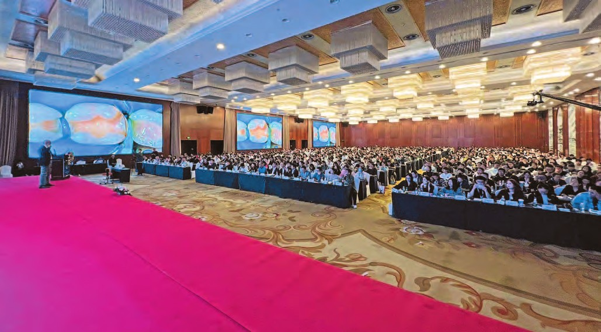
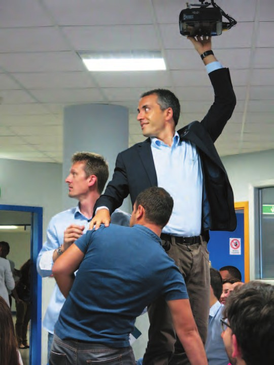
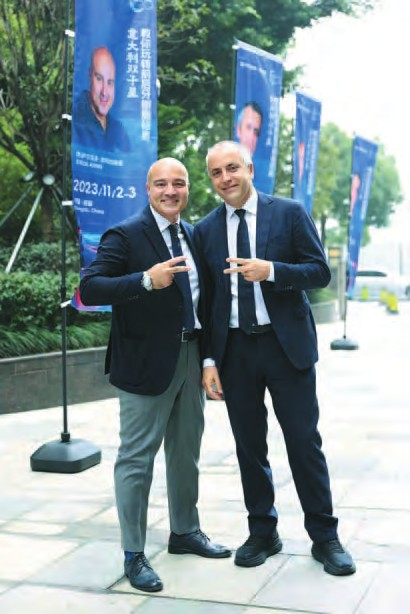
Деякі конкурсні роботи не можу повторити навіть я…
– Ми щороку бачимося з Вами на весняних зустрічах Європейської академії естетичної стоматології, хоча Ваше ім'я пов'язують також і з професійною спільнотою Стиль Італьяно. Я знаю, що Ви належали до цієї спільноти із самого початку її організації, але потім написали про свій вихід із цієї спільноти… Чому Ви вирішили покинути Стиль Італьяно?
– Ми із Сальваторе Сколавіно вирішили покинути групу Style Italiano у 2018 році, тому що у нас були розбіжності в деяких питаннях. Ми хотіли реалізувати свої ідеї для книг, статей. Ми дуже вдячні за досвід, який отримали в цій групі, але нам хотілося проявити себе в інший спосіб.
– Як член журі Глобал Клінікал Кейс Контест, який Академія Дентсплай Сірона проводить щороку для студентів і молодих стоматологів, чи можете сказати, наскільки відрізняються рівень реставрацій на конкурсі і рівень реставрацій, які ми можемо бачити у виконанні досвідчених стоматологів? Мені інколи здається, що студенти там виконують реставрації, які не під силу більшості лікарів…
– Так, я з вами згоден. Звичайно, кожен університет хоче показати, як добре він навчає. Реставрацію виконують студенти, але я вважаю, що це завжди командна робота.
Загалом, такі конкурси призначені не тільки для студентів, але й для аспірантів, які навчаються, наприклад, на майстер-програмі, то, звісно, між ними є різниця у навичках. Деякі конкурсні роботи не можу повторити навіть я, тому що реставрації просто ідеальні. Але все ж таки я впевнений, що це командна робота, хоча студент у ній – головна дійова особа. Чимало часу витрачається на участь у конкурсах. Я пам'ятаю Призма-чемпіонат, де робота займала багато часу, тому що це було змагання у реальному часі, і учасники прагнули досягти найкращого результату. Такі конкурси важливі, адже вони стимулюють ставати кращими і вчитися новому.
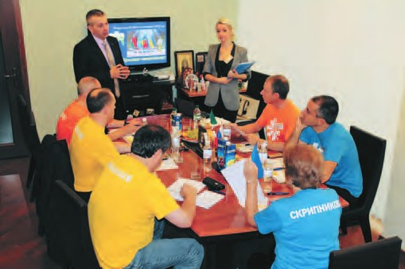
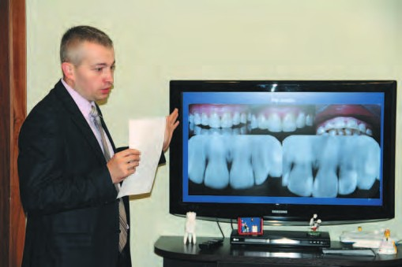
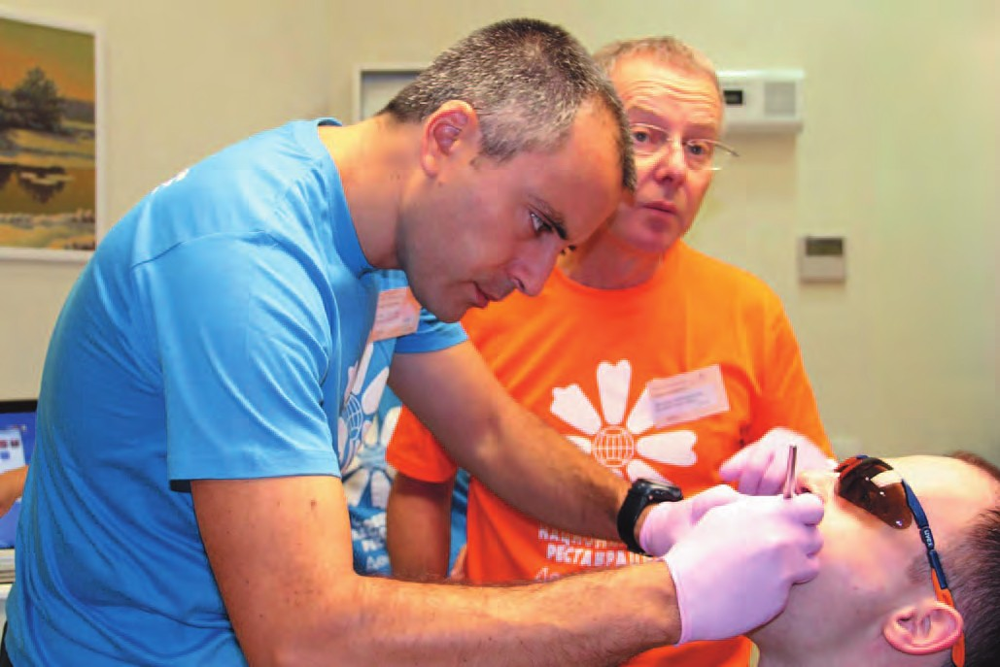
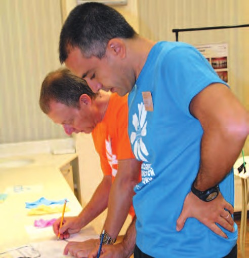
– Ми з Вами періодично згадуємо Ваш приїзд в Україну з лекціями і майстер-класами. Чи є у Вас бажання знову повернутися в Україну в ролі викладача? Адже дизайн Вашого першого виступу був у дизайні боксерського поєдинку зі мною, який завершився професійною нічиєю, і правила боксу передбачають можливість реваншу…
– Безумовно, я хочу якнайшвидше повернутися в Україну. Досі пам'ятаю приємні години, які провів у Полтаві і Києві. Тож сподіваюся, що найближчим часом буде можливість приїхати знову.
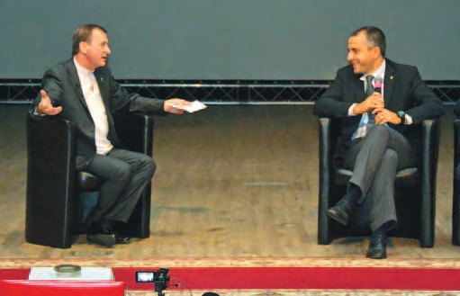
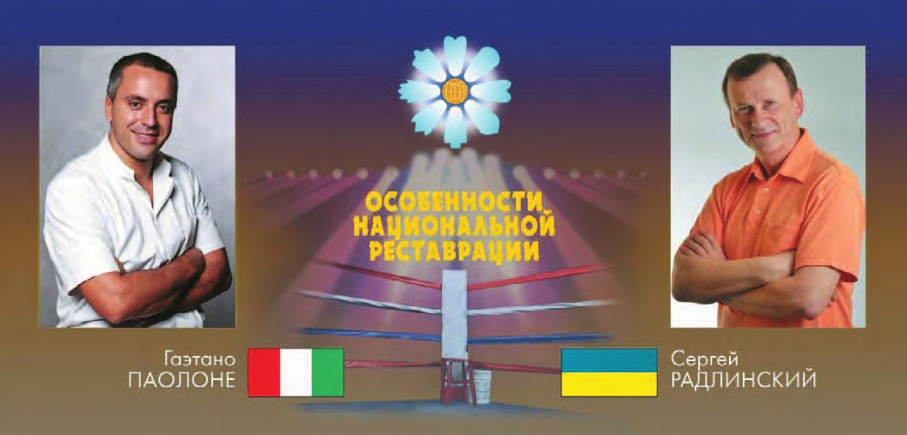
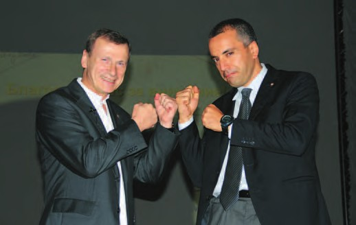
Завжди намагайтеся робити все на найвищому рівні!
– Стоматологія – стресогенна професія з високим ризиком професійного вигорання. А нинішні важкі часи у світі додають всім ще й постійного базового стресу… У який спосіб Ви персонально долаєте стрес? Чим захоплюєтеся поза стоматологічним кріслом і викладацькою трибуною?
– Я згоден, що це стресова професія, навіть якщо цього не видно збоку. Коли є час, намагаюся поринути у зовсім інші сфери: люблю читати, фотографувати, грати з дітьми в Лего. Іноді малюю аквареллю, і хоча у мене це не дуже добре виходить, мені ще треба вчитися, але все одно це розслаблює. Час від часу готую їжу – піцу або пасту карбонара. Це допомагає мені відволіктися і набратися сил для стоматології.
– Повертаючись до питання вибору професії, яке було на початку нашої розмови, прошу розповісти про Вашу родину. І чи хочете Ви, щоб Ваші діти теж обрали стоматологію своєю основною професією?
– Як я вже сказав, мій батько – педіатр на пенсії, а мати – вчителька середньої школи на пенсії. Я не обрав професію батька, бо хотів, щоб у мене була мануальна робота. Сподіваюся, що мої діти оберуть те, що їм справді подобається. Мою доньку звуть Кіара, їй 13 років, а сина Едуардо, і йому 11. Я не наполягаю, щоб вони обирали професію стоматолога. Їм ще треба подорослішати, а тоді визначатися, ким бути.
– На завершення нашої розмови у Вітальні журналу «ДентАрт» що б Ви побажали нашим читачам?
– Хочу побажати читачам «ДентАрту» отримувати задоволення від своєї професії. Це дуже важливо. Адже завжди є щось, що нам не подобається, і можна було б зробити краще. Іноді ми дуже втомлюємося або у нас щось не виходить. Але застосувавши всі свої вміння і новітні технології, можна досягти успіху у найскладніших клінічних випадках. Завжди намагайтеся робити все на найвищому рівні!
Сподіваюся, що ситуація стане кращою і для вас, українців, і для цілого світу.
– Дуже дякую за інтерв'ю і бажаю мирного неба усім нам!
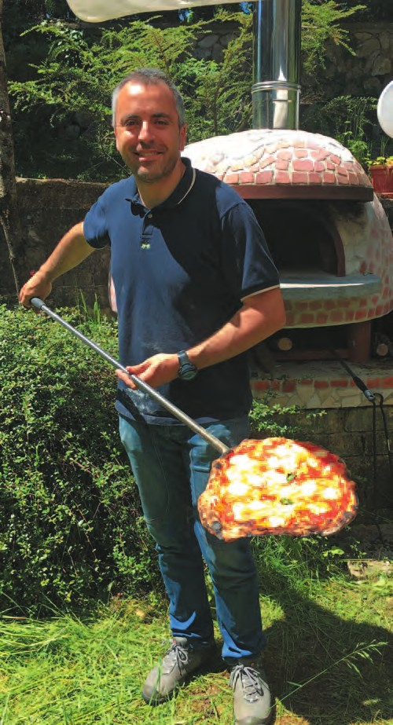